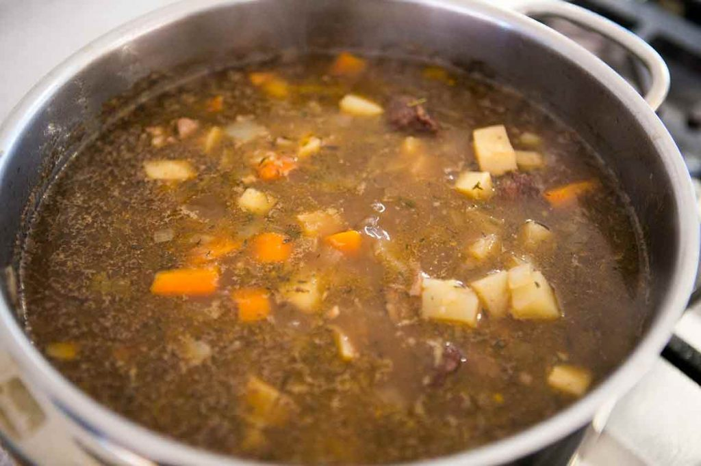

2 cups 1/2-inch pieces peeled carrots and/or parsnips (3 to 4 carrots or parsnips)
1/2 teaspoon freshly ground black pepper
2 tablespoons chopped fresh parsley
Steps
1 Brown the beef: Sprinkle about a teaspoon of salt over the beef pieces. Heat the olive oil in a large (6 to 8 quart),
thick-bottomed pot over medium-high heat.
Pat dry the beef with paper towels and working in batches, add the beef (do not crowd the pan, or the meat will steam and not brown) and cook,
without stirring, until well browned on one side, then use tongs to turn the pieces over and brown on another side.
2 Add garlic and saut�, then add stock, water, Guinness, wine, tomato paste, sugar, thyme Worcestershire,
bay leaves, simmer: Add garlic to the pot with the beef and saut� 30 seconds or until fragrant.
Add the beef stock, water, Guinness, red wine, tomato paste, sugar, thyme, Worcestershire sauce, and bay leaves. Stir to combine.
3 Saut� onions, carrots in separate pan: While the pot of meat and stock is simmering, melt the butter
in another pot over medium heat. Add the onions and carrots. Saut� the onions and
carrots until the onions are golden, about 15 minutes. Set aside until the beef stew in step 2 has simmered for one hour.
4 Add onions, carrots, potatoes to beef stew, simmer: Add the onions, carrots,
and the potatoes to the beef stew. Add black pepper and two teaspoons of
salt. Simmer uncovered until vegetables and beef are very tender, about 40
minutes. Discard the bay leaves. Tilt pan and spoon off any excess fat.
Transfer stew to serving bowls. Add more salt and pepper to taste. Sprinkle with parsley and serve.
Garnish the burger.Build your hamburger up from the bottom. Add lettuce, pickles, then the beef. Finish with a slice of tomato, onions and mustard and ketchup.

Congrats.You've made your own burger with your bare hands. Enjoy this delicious hamburger!